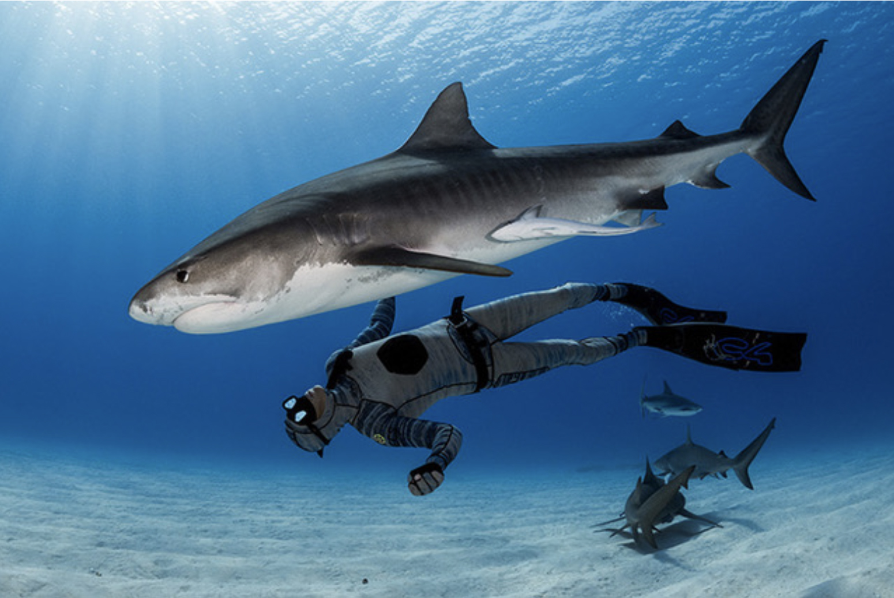

| South Africa |
|
Whale |
Covid-19 – Two Oceans Aquarium |
Covid-19 – Two Oceans Aquarium Date: 04/06/2020 By: Renee Leeuwner, Two Oceans Aquarium,
South Africa We live in uncertain times, as governments, organisations, companies, and
individuals are trying to get to grips with the current Covid-19 pandemic. |
| Pan Africa |
|
Chimpanzee |
Illegal Wildlife Trafficking – How You Can Help |
Illegal Wildlife Trafficking – How You Can Help Date: 19/05/2020 By: Greg Tully,
Pan-African Sanctuary Alliance (PASA) A young chimpanzee which had been caught for the
illegal wildlife trade Conservationists and field researchers have a unique opportunity
to both witness and counteract |
| North America |
|
Education Resource |
Zoo and Aquarium Educational Resources |
Illegal Wildlife Trafficking – How You Can Help Date: 19/05/2020 By: Greg Tully,
Pan-African Sanctuary Alliance (PASA) A young chimpanzee which had been caught for the
illegal wildlife trade Conservationists and field researchers have a unique opportunity
to both witness and counteract |
| Australia |
|
Fish |
World Fish Migration Day 2020 |
Migratory fishes are a strong, remarkable group of species. There are more than 1,100
freshwater species which migrate a distance of more than 100 km; some swim over 11,000
km over the course of their lifetimes. They navigate using the currents, magnetic
fields, and with their sense of taste and smell. Migratory fish are a crucial link in
the food chain and play an important role in creating healthy and productive river
systems.
|
| Maldives |

|
Blue Whale |
How VR is Changing Visitor Experiences at Zoos and Aquariums |
The balance all conservation organizations navigate is how to inspire a love and care
for the natural world and educate audiences in animal welfare while being engaging and
entertaining. The vocational passion of teams at zoos and aquariums around the world
ensures that animal well-being is always the paramount factor in encounters with the
public, and that guests are inspired, immersed and join the conservation journey. That
is why we see more and more of the WAZA network enhancing their conservation mission
with the use of virtual reality. |